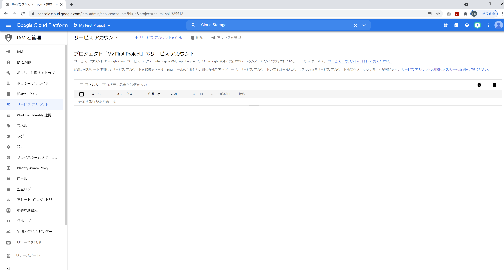
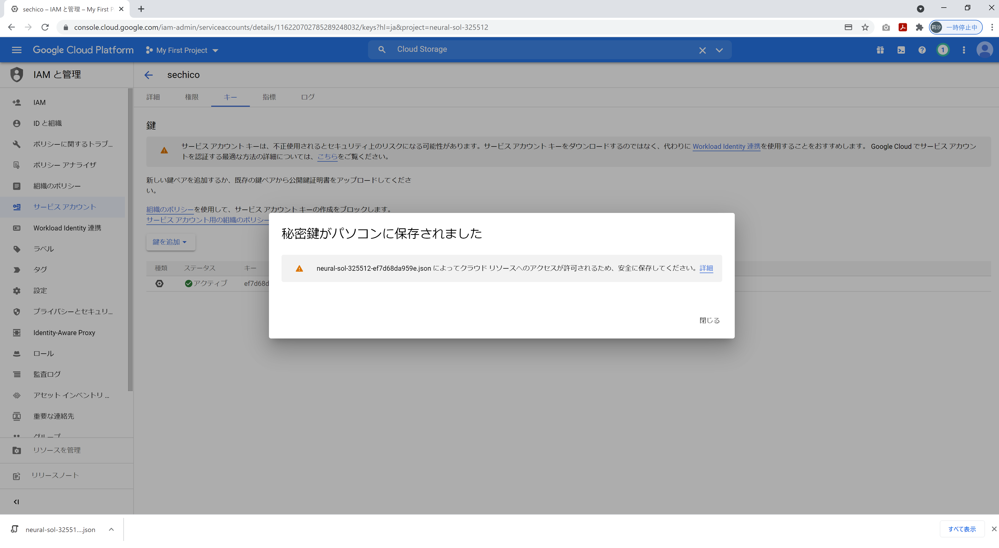

GCP各種サービスの設定
この手順では、GCPサービスの設定を進めていきます。
1. GCSバケット作成
左上のナビゲーションメニューから、CloudStorageを選択
「バケットを作成」をクリック
グローバルに一意になるように各自設定を行います。
↓作成完了
2. サービスアカウントの作成
GCPの各種リソースに対して権限を作成、管理することができるようにサービスアカウントを作成します
左上のナビゲーションメニューから、IAMと管理＞サービスアカウントを選択

任意のサービスアカウント名を入力
↓作成完了
3. 秘密鍵ファイルの作成・ダウンロード
作成したサービスアカウントを選択
「キー」タブ＞「新しい鍵を作成」を選択
json形式のキーをダウンロード
↓ダウンロード完了

4. CloudStorageAPIが有効化されていることを確認
画面上部の検索窓に「Cloud Storage」と入力し、検索結果から「Cloud Storage API」を選択
※「APIが有効です」となっていることを確認
5. BigQueryAPIが有効化されていることを確認
画面上部の検索窓に「BigQuery API」と入力し、検索結果から「BigQuery API」を選択
※「APIが有効です」となっていることを確認
6. データセットの作成
左上のナビゲーションメニューから、BigQueryを選択
エクスプローラーの中の「▶プロジェクト名」から「データセットを作成」を選択
画面右側に「データセットを作成する」が出てくるので、「データセットID」を入力
※今回は「mira_vol24」を指定
mira_vol24
↓完了
「▶プロジェクト名」の下に「▶mira_vol24」が作成される
7. テーブルの作成
作成したデータセット「mira_vol24」に対して、クエリを実行し、テーブルを作成
※今回は「mira_example」を指定
mira_example
CREATE TABLE mira_vol24.mira_example
(
id NUMERIC,
mira_code STRING,
mira_text STRING,
work_date STRING
)
※データセットIDを「mira_vol24」から変更した場合は、
ご自身が指定したデータセットIDに置換して実行する必要があります
↓実行完了
先ほど実行したクエリ通りのフィールドが表示されていることを確認
このクエリは、
データセットID＝mira_vol24
テーブルID＝mira_example
を指定しています
※先ほどDLしたソースファイルの\sql\mira_vol24.sql の中にも同じSQLがあります